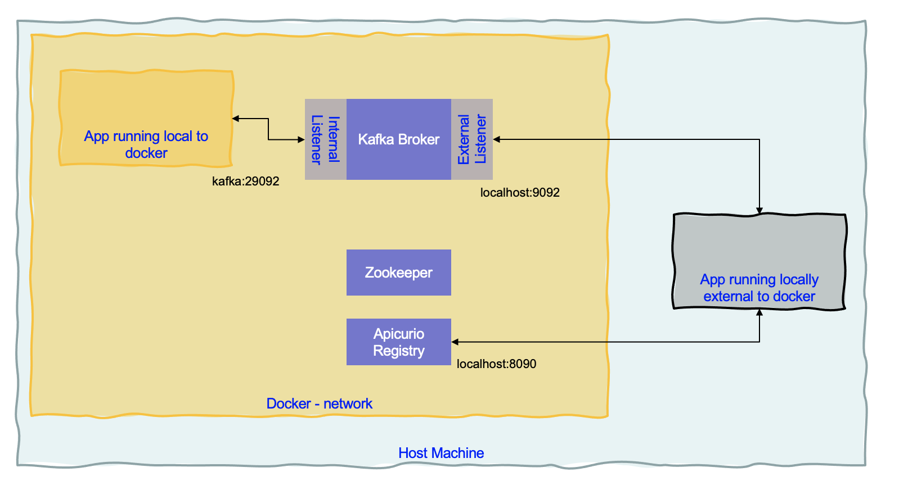

Apache Kafka Studies
This repository regroups a set of personal studies and quick summaries on Kafka. Most of the curated contents are defined in the Kafka overview EDA article, and the producer and consumer one.
Kafka local
The docker compose in this repo, starts one zookeeper and one Kafka broker locally using last Strimzi release, one Apicurio for schema registry and Kafdrop for UI.
In the docker compose the Kafka defines two listeners, for internal communication using the DNS name kafka and port 29092 and one listener for external communication on port 9092.

A quarkus app, for example, running with quarkus:dev will connect to localhost:9092. But a container in the same network needs to access kafka node.
To start kafkacat and kafkacat doc to access sample consumer - producer
docker run -it --network=host edenhill/kafkacat -b kafka:9092 -L
Security summary
For deep dive on security administration see confluent article and product documentation and Rick's blogs Part 1 and Part 2
The settings that are important:
- security.protocol See how the listeners are configured in Kafka. The valid values are:
PLAINTEXT (using PLAINTEXT transport layer & no authentication - default value).
SSL (using SSL transport layer & certificate-based authentication)
SASL_PLAINTEXT (using PLAINTEXT transport layer & SASL-based authentication)
SASL_SSL (using SSL transport layer & SASL-based authentication)
tls boolean is for the traffic encryptio, while authentication.type will define the matching security protocol.
listeners:
- name: plain
port: 9092
type: internal
tls: false
- name: tls
port: 9093
type: internal
tls: true
authentication:
type: tls
- name: external
type: route
port: 9094
tls: true
authentication:
type: scram-sha-512
ssl.truststore.locationandssl.truststore.password: when doing TLS encryption we need to provide our Kafka clients with the location of a trusted Certificate Authority-based certificate. This file is often provided by the Kafka administrator and is generally unique to the specific Kafka cluster deployment. The certificate in in JKS format for JVM languages and PEM/ P12 for nodejs or Python.
To extract a PEM-based certificate from a JKS-based truststore, you can use the following command: keytool -exportcert -keypass {truststore-password} -keystore {provided-kafka-truststore.jks} -rfc -file {desired-kafka-cert-output.pem}
- sasl.mechanism for authentication protocol used. Possible values are:
PLAIN (cleartext passwords, although they will be encrypted across the wire per security.protocol settings above)
SCRAM-SHA-512 (modern Salted Challenge Response Authentication Mechanism)
GSSAPI (Kerberos-supported authentication and the default if not specified otherwise)
- for java based app, the
sasl.jaas.configstrings are:
sasl.jaas.config = org.apache.kafka.common.security.plain.PlainLoginModule required username="{USERNAME}" password="{PASSWORD}";
sasl.jaas.config = org.apache.kafka.common.security.scram.ScramLoginModule required username="{USERNAME}" password="{PASSWORD}";
For external connection to Strimzi cluster use the following, where USERNAME is a scram-user
bootstrap.servers={kafka-cluster-name}-kafka-bootstrap-{namespace}.{kubernetes-cluster-fully-qualified-domain-name}:443
security.protocol=SASL_SSL
sasl.mechanism=SCRAM-SHA-512
sasl.jaas.config=org.apache.kafka.common.security.scram.ScramLoginModule required username="{USERNAME}" password="{PASSWORD}";
ssl.truststore.location={/provided/to/you/by/the/kafka/administrator}
ssl.truststore.password={__provided_to_you_by_the_kafka_administrator__}
To get the user password get the user secret:
oc get secret scram-user -o jsonpath='{.data.admin_password}' | base64 --decode && echo ""
To get the Bootstrap URL use:
expost K_CLUSTER_NAME=mycluster
export BOOTSTRAP="$(oc get route ${K_CLUSTER_NAME}-kafka-bootstrap -o jsonpath='{.spec.host}'):443"
The sasl.jaas.config can come from an environment variable inside of a secret, but in fact it is already defined in the scram user in Strimzi:
oc get secret my-user -o json | jq -r '.data["sasl.jaas.config"]' | base64 -d -
- For internal communication, with PLAIN the setting is
bootstrap.servers={kafka-cluster-name}-kafka-bootstrap.{namespace}.svc.cluster.local:9093
security.protocol = SASL_PLAINTEXT (these clients do not require SSL-based encryption as they are local to the cluster)
sasl.mechanism = PLAIN
sasl.jaas.config = org.apache.kafka.common.security.plain.PlainLoginModule required username="{USERNAME}" password="{PASSWORD}";
- For internal authentication with mutual TLS the settings: The certificates are mounted into the pod:
bootstrap.servers={kafka-cluster-name}-kafka-bootstrap.{namespace}.svc.cluster.local:9093
security.protocol=SSL
ssl.truststore.location=/deployments/certs/server/ca.p12
ssl.truststore.password={__provided_to_you_by_kafka_administrator__}
ssl.keystore.location=/deployments/certs/user/cusera.p12
ssl.keystore.password={__extracted_from_generated_kafka_user_secret_with_key=user.password__}
Remember that if the application does not run in the same namespace as the kafka cluster then copy the secrets with something like
if [[ -z $(oc get secret ${TLS_USER} 2> /dev/null) ]]
then
# As the project is personal to the user, we can keep a generic name for the secret
oc get secret ${TLS_USER} -n ${KAFKA_NS} -o json | jq -r '.metadata.name="tls-user"' | jq -r '.metadata.namespace="'${YOUR_PROJECT_NAME}'"' | oc apply -f -
fi
if [[ -z $(oc get secret ${SCRAM_USER} 2> /dev/null) ]]
then
# As the project is personal to the user, we can keep a generic name for the secret
oc get secret ${SCRAM_USER} -n ${KAFKA_NS} -o json | jq -r '.metadata.name="scram-user"' | jq -r '.metadata.namespace="'${YOUR_PROJECT_NAME}'"' | oc apply -f -
fi
Using Kafdrop
For Kafdrop configuration see the kafka properties and startKafDrop.sh in scripts folder.
To get the user password:
# Get certificate to put in truststore
oc get secret kafka-cluster-ca-cert -o jsonpath='{.data.ca\.p12}' | base64 --decode >./certs/kafka.p12
# Get certificate password
oc get secret kafka-cluster-ca-cert -o jsonpath='{.data.ca\.password}' | base64 --decode
# Get user passwor from the jaas config
oc get secret scram-user -o jsonpath='{.data.sasl\.jaas\.config}' | base64 --decode && echo
Those results are set in the properties:
ssl.truststore.password=
username="scram-user" password="";
Using Apicurio
Once started define a schema in json and upload it to the api: http://apicurio:8080/api. Here is an example of command:
Schema:
{
"namespace": "ibm.gse.eda.vaccine.orderoptimizer",
"doc": "Avro data schema for Reefer events",
"type":"record",
"name":"Reefer",
"fields":[
{
"name": "reefer_id",
"type": "string",
"doc": "Reefer container ID"
},
{
"name": "status",
"type": "string",
"doc": "Reefer Container ID status. Could be an Enum"
},
{
"name": "location",
"type": "string",
"doc": "Reefer container location"
},
{
"name": "date_available",
"type": "string",
"doc": "Date when the inventory will be available"
}
]
}
Upload it to schema registry
curl -X POST -H "Content-type: application/json; artifactType=AVRO" \
-H "X-Registry-ArtifactId: vaccine.reefers-value" \
--data @${scriptDir}/../data/avro/schemas/reefer.avsc http://localhost:8080/api/artifacts
This repository content
Outside of my personal notes, some folders include running app:
- python-kafka for simple reusable code for event consumer and producer with python.
- Kafka Vertx starter code from the event streams team, within one app to test a deployed event stream deployment
- vertx consumer and producer as separate quarkus apps.
Source of information
- Our event driven reference architecture content
- Container shipment solution
- Start by reading Kafka introduction - a must read!
-
Another introduction from Confluent, one of the main contributors of the open source.
- Develop Stream Application using Kafka
- Tutorial on access control, user authentication and authorization from IBM.
- Kafka on Kubernetes using stateful sets
- IBM Developer article - learn kafka
- Using Kafka Connect to connect to enterprise MQ systems - Andrew Schofield
- Does Apache Kafka do ACID transactions? - Andrew Schofield
- Spark and Kafka with direct stream, and persistence considerations and best practices
- Example in scala for processing Tweets with Kafka Streams
Kafka programming
Event streams
Product documentation to access event streams.
- Event streams / kafka on OpenShift with TLS connection on external route. We need the following quarkus properties:
# get environment variables from configmap
quarkus.openshift.env.configmaps=vaccine-order-ms-cm
# use docker compose kafka
%dev.kafka.bootstrap.servers=kafka:9092
with matching config map
yaml
apiVersion: v1
kind: ConfigMap
metadata:
name: vaccine-order-ms-cm
data:
KAFKA_BOOTSTRAP_SERVERS: eda-dev-kafka-bootstrap-eventstreams.gse-eda-2021-1-0143c5dd31acd8e030a1d6e0ab1380e3-0000.us-east.containers.appdomain.cloud:443
KAFKA_SSL_PROTOCOL: TLSv1.2
KAFKA_USER: scram
KAFKA_SSL_TRUSTSTORE_LOCATION: /deployments/certs/server/ca.p12
KAFKA_SSL_TRUSTSTORE_TYPE: PKCS12
SHIPMENT_PLAN_TOPIC: vaccine_shipment_plans
KAFKA_SASL_MECHANISM: SCRAM-SHA-512
KAFKA_SECURITY_PROTOCOL: SASL_SSL
and secrets
Kafka Connect with Debezium
Kafka with Quarkus
Here is a template code for quarkus based Kafka consumer: quarkus-event-driven-consumer-microservice-template.
Read this interesting guide with Quarkus and kafka streaming: Quarkus using Kafka Streams, which is implemented in the quarkus-reactive-msg producer, aggregator folders.
To generate the starting code for the producer we use the quarkus maven plugin with kafka extension:
mvn io.quarkus:quarkus-maven-plugin:1.12.2.Final:create -DprojectGroupId=jbcodeforce.kafka.study -DprojectArtifactId=producer -Dextensions="kafka"
for the aggregator:
mvn io.quarkus:quarkus-maven-plugin:1.12.2.Final:create -DprojectGroupId=jbcodeforce.kafka.study -DprojectArtifactId=aggregator -Dextensions="kafka-streams,resteasy-jsonb"
Interesting how to generate reference value to a topic with microprofile reactive messaging. stations is a hash:
@Outgoing("weather-stations")
public Flowable<KafkaRecord<Integer, String>> weatherStations() {
List<KafkaRecord<Integer, String>> stationsAsJson = stations.stream()
.map(s -> KafkaRecord.of(
s.id,
"{ \"id\" : " + s.id +
", \"name\" : \"" + s.name + "\" }"))
.collect(Collectors.toList());
return Flowable.fromIterable(stationsAsJson);
};
Channels are mapped to Kafka topics using the Quarkus configuration file application.properties.
To build and run:
# under producer folder
docker build -f src/main/docker/Dockerfile.jvm -t quarkstream/producer-jvm .
# under aggregator folder
docker build -f src/main/docker/Dockerfile.jvm -t quarkstream/aggregator-jvm .
# Run under quarkus-reactive-msg
docker-compose up
# Run kafkacat
docker run --tty --rm -i --network kafkanet debezium/tooling:1.0
$ kafkacat -b kafka1:9092 -C -o beginning -q -t temperatures-aggregated